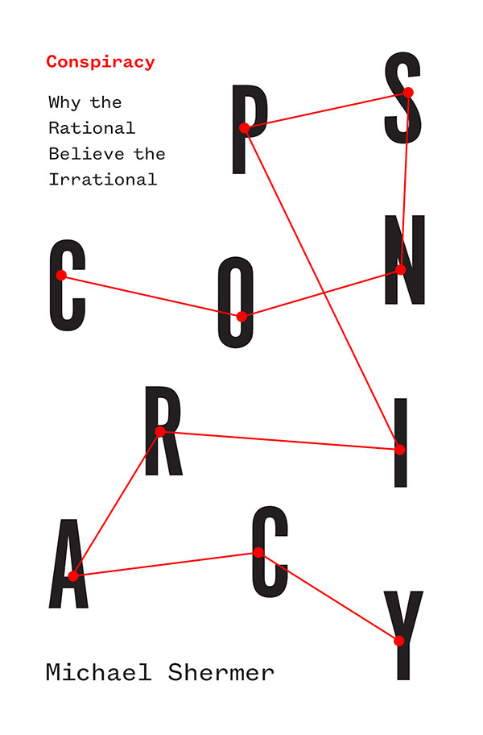

Michael Shermer
Rational thinking is important
Home
Media
Gallery
Video
Contact
Books gallery
Skeptic: Viewing the World with a Rational Eye
The Believing Brain
Conspiracy

The Borderlands of Science
In Darwin’s Shadow
Science Friction
Why Darwin Matters
The Moral Arc
Why People Believe Weird Things
Related resources
Michael Shermer Blog
Skeptic Magazine
Carl Sagan on Wikipedia